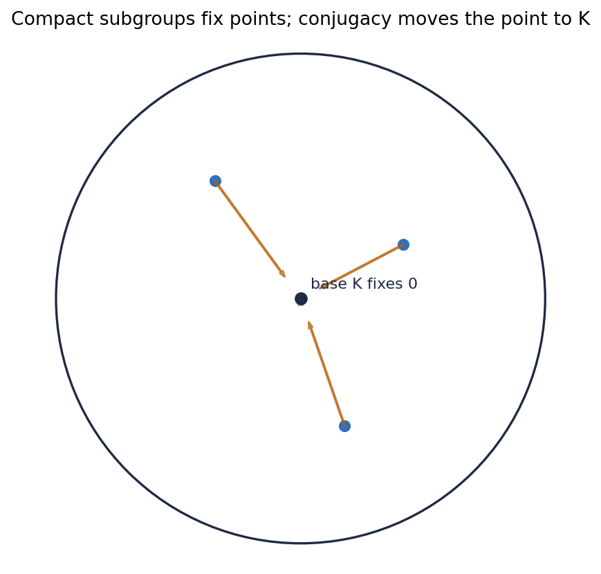
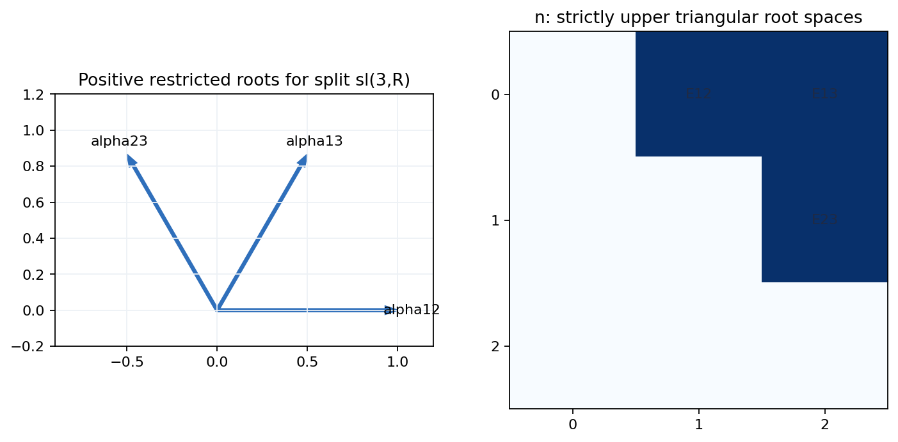

1. Treating \(K\) as disposable
\(K\) disappears in \(G/K\), but it is essential for the group-level decomposition and conjugacy of compact subgroups.
2. Treating \(A\) as all of \(\mathfrak p\)
\(A\) comes from a maximal abelian subspace; the remaining noncompact directions are organized through roots and \(N\).
3. Treating \(N\) as abelian
Nilpotent means brackets eventually stop, not that brackets vanish immediately.
4. Confusing local and global products
The theorem asserts a global analytic diffeomorphism, much stronger than a neighborhood coordinate chart.
5. Forgetting real dimensions in the complex case
Complex root spaces contribute twice their complex dimension when the algebra is viewed over the real numbers.
Correction Strategy
For each factor, ask which invariant certifies it: compact isotropy, positive diagonal, root bracket, nilpotent series, or reconstruction residual.

